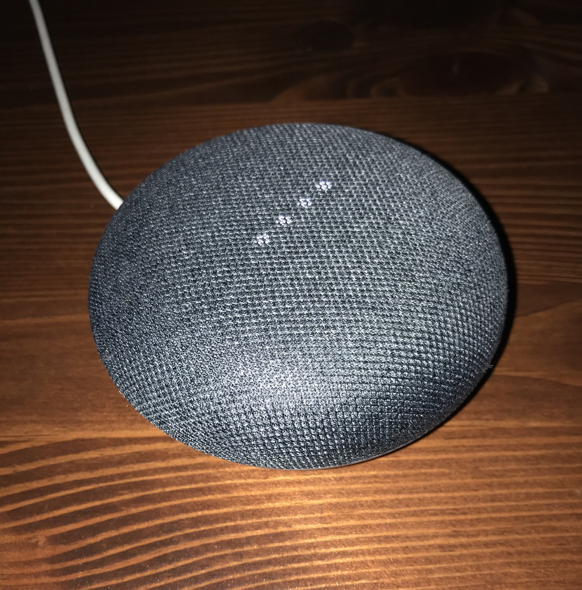

The Autopsy Report · Device #027
The Nest Mini, Second Generation
Same puck, new brain: the 2019 Nest Mini kept the $49 shape everyone knew and hid a machine-learning chip, a third microphone, and twice the bass inside. Public-records edition: we haven't opened one yet.
What is this thing?
The Google Nest Mini (2nd gen) is the successor to the Home Mini — a compact smart speaker with Google Assistant inside. The headline upgrades over its predecessor: a dedicated machine-learning chip (about a tera-operation per second) so common commands get answered on-device, a third microphone for hearing you in noisy rooms, bass twice as strong, and a wall-mount hook molded into the base. VentureBeat TWICE
The model number is H2C, filed with the FCC under ID A4R-H2C — "A4R" being Google's grantee code. Hardware database entry
Whose box is this?
Not ours — not yet. No unit of this device is on our bench. We haven't bought one, opened one, photographed one's insides, or listened to one boot. Everything on this page comes from public records: a hardware database entry, an archived iFixit teardown exhibit, launch coverage, and a freely-licensed stock photo credited below. When a unit lands on our bench, this report gets a second edition with our own photos, measurements, and boot log.
A short history
- October 2017Google launches the Home Mini at $49 — the puck this device replaces. VentureBeat
- September 2019The FCC grant for A4R-H2C issues, covering model H2C — a month before the public announcement. PhoneArena
- October 15, 2019Google unveils the Nest Mini at its Made by Google event: $49, on sale October 22 in 23 countries, with the ML chip, wall mount, and recycled-fabric top. VentureBeat
- 2019 – 2020Teardowns identify a Synaptics application processor, Toshiba flash, and Nanya RAM — a clean break from the Marvell platform of the Home Mini. Hardware database entry Archived iFixit teardown exhibit
The outside
Deliberately almost identical to the Home Mini — same puck, same fabric — with three tells: a hanging groove on the underside so it hooks on a wall screw with no mount, base colors that now match the top, and a DC barrel jack replacing the old micro-USB power port (the new speaker's 15-watt supply outgrew the 9-watt one). The fabric top is made from 100% recycled plastic bottles. TWICE Digital Trends

The board
We haven't held this board ourselves, so this is the teardowns' account, not ours. Published hardware records show a single compact board built around a Synaptics application processor — the part that also carries the on-device machine-learning acceleration Google advertised — paired with Toshiba NAND flash and Nanya DDR3 RAM. The third microphone and the reworked speaker assembly sit above the board under the fabric. Hardware database entry Archived iFixit teardown exhibit
The platform change is the story: the Home Mini ran on Marvell silicon; the Nest Mini moved to Synaptics. Same puck on the outside, different computer on the inside. Hardware database entry
Under the microscope: the chips
What's on the board according to published hardware records, what each part does, and how sure we are. Confirmed means a primary source (the manufacturer, the FCC, or our own bench) verifies it. Likely means public hardware records agree on it, but we haven't verified it ourselves. Every row links somewhere you can read more.
| Chip | What it does | How we know | Dig deeper |
|---|---|---|---|
| Synaptics AS370 A1 BG6CDZ1F marking reported |
The main processor — with the on-device machine-learning acceleration behind the "1 tera-op" claim. | Likely Marking reported by the hardware database and corroborating teardown records. | Hardware database entry |
| Toshiba TC58NVG2S0H | The NAND flash — where the device's software lives when the power is off. | Likely Marking reported by the hardware database. | Hardware database entry |
| Nanya NT5CC128M16JR-EK | The RAM — DDR3, the speaker's short-term workspace. | Likely Marking reported by the hardware database. | Family datasheet (third-party mirror) |
Datasheet note: we found no manufacturer or archive.org datasheet for the Synaptics AS370 or the Toshiba flash; the Nanya link above is a third-party mirror of the family datasheet, labeled as such. Synaptics' public documentation for the AS370 is sparse — another industry documentation gap, stated plainly.
The government's file on this box
The Nest Mini's FCC filing sits under FCC ID: A4R-H2C, with the grant dated September 10, 2019 — about five weeks before Google announced the device. The internal photos were among the filing attachments under the standard 180-day confidentiality. PhoneArena
Browse the file yourself: filing page
Listening to it boot
We haven't — there is no unit on our bench, so there is no boot log, no serial capture, nothing. That section gets written the day one arrives.
Our rule for debug ports, whenever we do meet this hardware: we listen, we don't knock. If the board exposes a serial console, we'll connect a read-only listener and record what the device volunteers about its own startup — and publish that. We won't use it to break in, dump firmware, or bypass anything. Whether this board exposes a console is currently unknown — it awaits the bench.
What we found
The "same puck" story is only skin deep. Google kept the shape and the price but replaced the entire computing platform — Marvell out, Synaptics in — to get on-device machine learning into a $49 speaker. That's the kind of platform migration you only catch by reading the silicon, not the press release. Hardware database entry VentureBeat
The wall-mount hook is the most honest design detail. No accessory to buy, no bracket to lose — just a groove molded into the base. Small, cheap, and exactly right. TWICE
What we didn't do
- This device is not on our bench. We have not disassembled one.
- We captured no boot log and ran no bench tests.
- We have not touched, extracted, modified, or shared this device's firmware.
- We have not probed any debug interface on it.
- The product photo above is a freely-licensed stock image, credited in its caption — not our photography.
By the numbers
- Model: Google Nest Mini 2nd gen (2019), H2C
- FCC ID: A4R-H2C (grant September 10, 2019)
- Main chip: Synaptics AS370 A1 — with on-device ML acceleration (~1 tera-op)
- Memory: Nanya DDR3 RAM + Toshiba NAND flash
- Launched: October 15, 2019, at $49; on sale October 22 in 23 countries
- Tells vs. the Home Mini: Wall-mount groove, third mic, 2× bass, DC barrel power
Words to know
Every term this page uses, in plain English. No prior knowledge required.
- Smart speaker
- A speaker with a voice assistant built in — it listens for a wake word, then answers, plays music, or controls your home.
- On-device machine learning
- Doing the AI work inside the gadget itself instead of sending your voice to a distant server first — faster, and less of your audio leaves the house.
- System on a chip (SoC)
- The whole computer — processor and friends — on one piece of silicon.
- NAND flash
- The chip that holds the device's software when the power is off.
- Boot log
- The text a device prints as it starts up. Engineers read it to see what's inside without opening anything.
- UART / serial console
- A simple port that lets you watch a device narrate its own startup, line by line.
- Firmware
- The software baked into the device — the part that runs before anything else.
- FCC
- The Federal Communications Commission — the U.S. agency that regulates anything that transmits radio. Every wireless gadget sold here has to pass its tests first.
- FCC ID
- The ID the FCC assigns to each approved wireless product. The first few characters are the company's grantee code; the rest is the maker's model code. Punch it into fccid.io and the whole public filing comes up.
Sources & confidence
- Launch details (date, price, countries, features): contemporaneous launch coverage. High confidence.
- Chip identities (Synaptics AS370, Toshiba flash, Nanya RAM): hardware database entry plus an archived teardown exhibit agree. Medium-high confidence; still Likely until our bench confirms.
- Platform change (Marvell → Synaptics): follows directly from comparing this page's sources with the Home Mini's. High confidence.
- FCC ID, model, grant date: the public filing record. High confidence.
- Anything not listed here is unknown until the bench says otherwise. We'll say so, out loud, when that's the case.
Public-records edition. This device is not on our bench. No disassembly, no boot log, no bench testing, and no firmware touched, extracted, modified, or shared. The stock photo is freely licensed and credited in its caption.
Legal note. BareBoard is an educational project. Everything on this page is assembled from public records and freely-licensed photography credited in its caption. We don't publish, host, or distribute firmware, keys, passwords, or credentials. Product names and trademarks belong to their respective owners and appear here only to identify the hardware. If you believe anything here infringes your rights, contact us and we'll address it promptly.